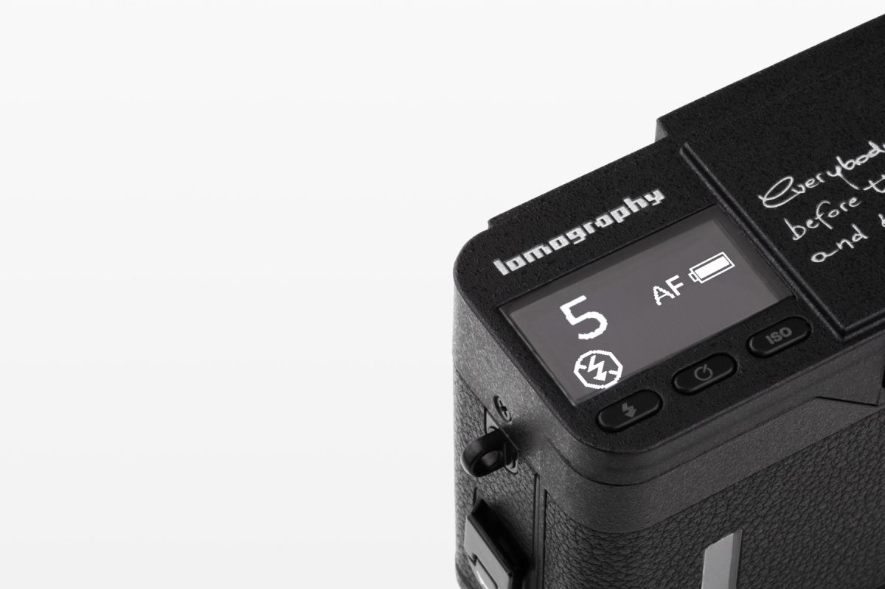
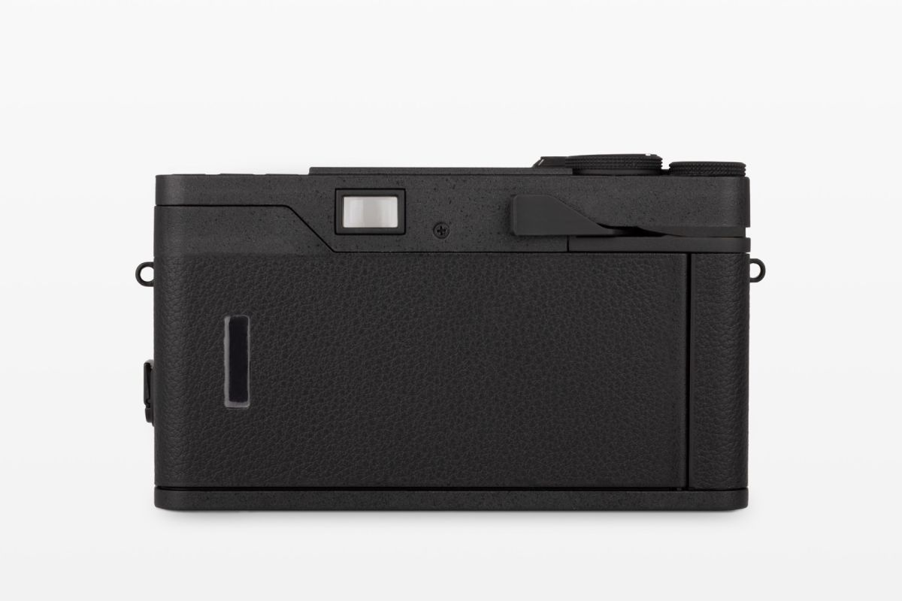
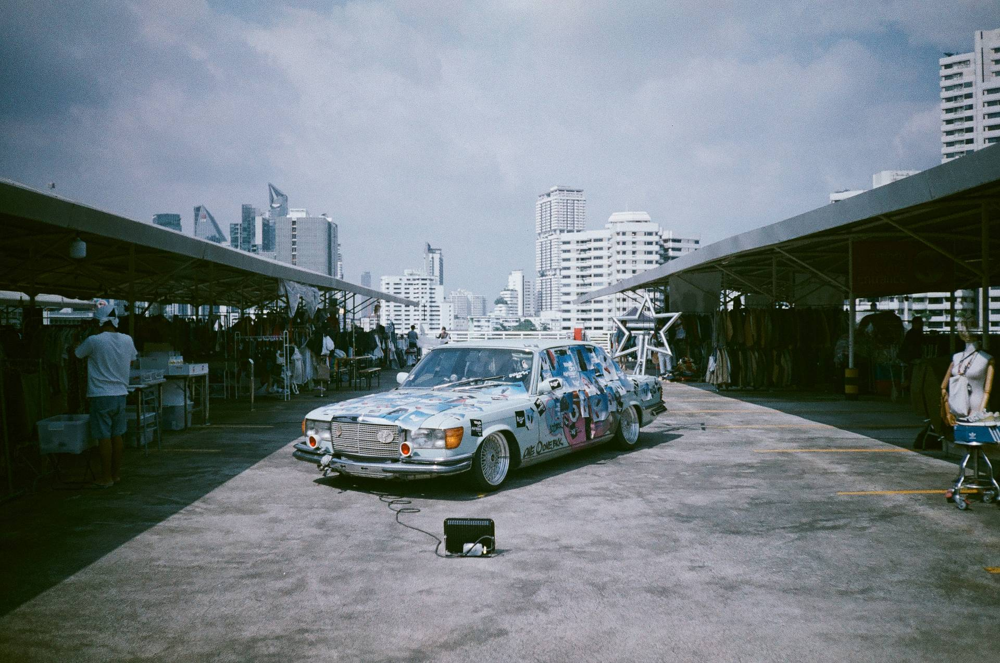
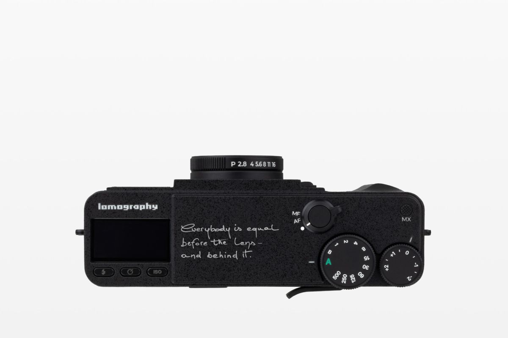
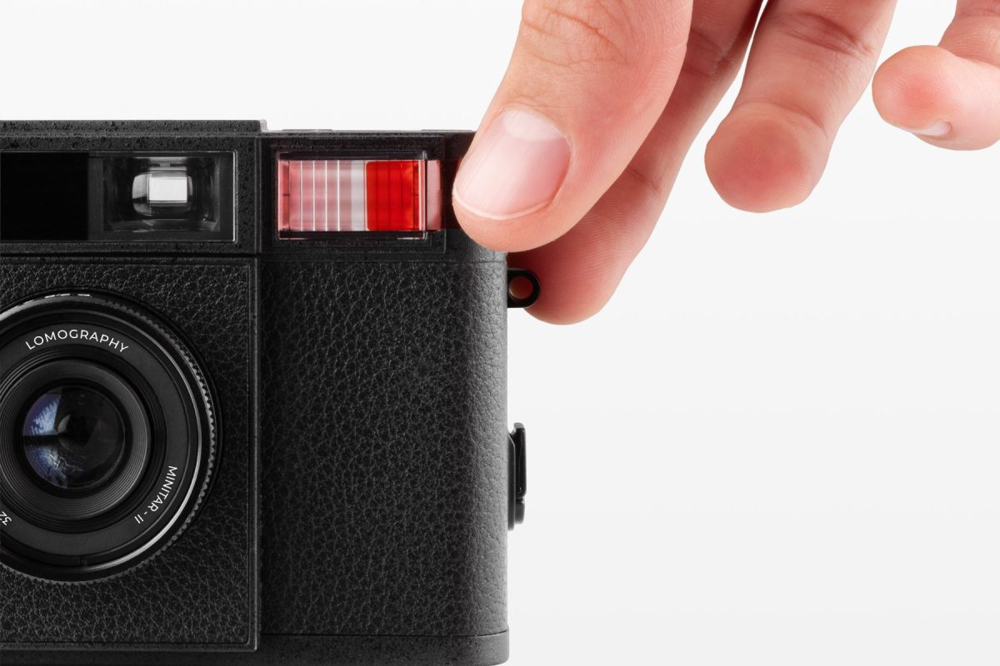
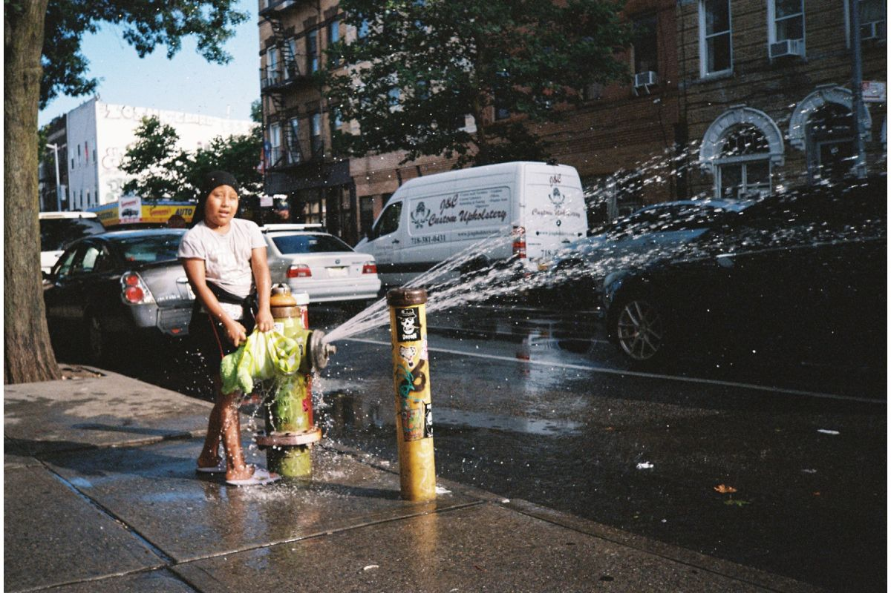
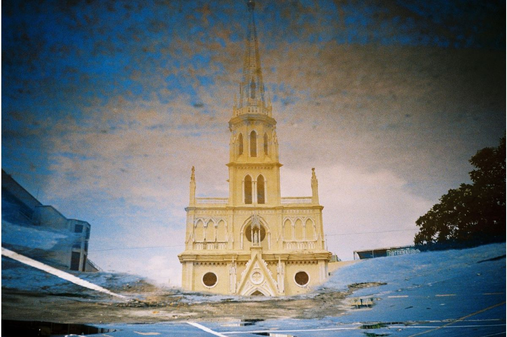

"로모그래피의 모든 카메라가 그렇듯, MC-A 도 ‘초점을 잡지 마라’ 가 아니라 ‘초점을 신경 쓰지 마라’ 쪽이다. 다만 이번엔 그 자리를 LiDAR 가 대신 잡는다."
2025년 10월, 로모그래피가 새 35mm 컴팩트를 발표했다. 이름은 Lomo MC-A. 로모의 카탈로그 안에서는 익숙한 두 글자 — LC-A 의 곁에 MC-A 가 놓이는 그림이지만, 안의 작동은 꽤 다르다. MC-A 는 로모그래피의 첫 35mm 자동 초점 카메라다. 측거 방식은 LiDAR. 작은 점광원이 피사체에 닿아 돌아오는 시간을 재서 거리를 잡는다. 노출은 ISO 100 부터 3200 까지 자동, 셔터/조리개 우선 같은 모드는 없다. 손에 들고 한 손으로 누른다.
변화 — 처음 들어온 자동 초점
리뷰어들이 공통적으로 짚는 첫 인상은 두 가지. 하나는 AF 가 의외로 정확하다는 것. 한 매체는 네 롤을 찍는 동안 초점을 놓친 컷이 거의 없었다고 적었고, 다른 매체는 가까운 거리 — 약 50cm 이하 — 만 제외하면 락이 빠르게 잡힌다고 말했다. 두 번째는 ISO 3200 까지 오토 노출이 받아준다는 점. 로모의 옛 LC-A 계열이 ISO 1600 에서 끊겼던 걸 생각하면 한 단계 올라온 셈이다. 저조도에서 손이 더 자유로워졌다.
몸체는 작고 묵직하다. 메탈 외피 + 가죽 패턴. 한 손에 잡히는 사이즈에 LCD 작은 창이 박혀 있다. 셔터 누르면 LiDAR 가 점점점 빛을 쏜다. 어두운 카페에 앉아 셔터 누르면 그 빛이 보일 정도로 — 그게 첫 번째 약점으로 이어진다.


흔들림 — 들리는 AF, 헷갈리는 LiDAR
AF 가 작동하는 소리가 크다. 정확히는 LiDAR 측거 자체는 무음이지만 렌즈 안 모터가 움직이는 소리가 잘 들린다. 한 리뷰어는 “2026 년의 기술이라면 더 조용했어야 한다”고 적었다. 조용한 실내, 카페, 갤러리에서 셔터 한 번 누르면 옆 자리 사람이 돌아본다. 캔디드 촬영의 ‘은밀함’ 은 사라진다.
두 번째는 LiDAR 의 한계. 단일 점 측거라서 복잡한 장면 — 망사 너머, 유리창 앞, 빽빽한 가지 사이 — 에서는 의도하지 않은 배경에 초점이 잡힌다. 사용자가 다시 조준해 락하면 해결되지만, 그 ‘다시’ 의 1초가 거리 사진의 결정적 순간을 놓치게 만든다. 로모식 ‘던지고 누른다’ 와 그리 잘 맞지 않는 부분이다.

그리고 — 첫 물량의 어드밴서
리뷰들이 짚는 더 무거운 문제는 따로 있다. 필름 어드밴서 메커니즘의 결함이다. 사전 출하 유닛(pre-production)에서는 rewind 텐션이 풀려 백을 열 때 라이트 릭이 일어나는 케이스가 보고됐고, 양산 유닛으로 넘어온 뒤에도 와인딩 레버를 끝까지 돌렸는데 다음 프레임으로 넘어가지 않거나, 셔터가 눌리지 않거나, 두 프레임이 살짝 겹쳐 찍히는 사례가 여러 사용자에게서 나왔다.
한 미국 사진가는 MC-A 로 15 롤을 찍은 뒤 “필름 잼으로 컷을 여러 장 잃었다” 며 환불을 받았다고 자신의 글에 적었다. 다른 리뷰어는 두 카메라 모두 같은 패턴의 와인딩 이슈를 보였다고 썼다. 즉 일부 개체의 우연이 아니라 초기 물량 전반의 메커니즘 결함에 가까운 패턴으로 읽힌다.
로모그래피는 LC-A 계열에 대해 2 년 워런티 + 무상 수리 또는 교환 정책을 운영한다. MC-A 도 동일한 정책 안에 있어 결함이 확인되면 교환·환불은 가능하다. 다만 이 글이 쓰이는 시점(2026 년 5 월) 까지 펌웨어 업데이트나 어드밴서 메커니즘에 대한 공식 리비전 발표는 따로 없었다. 후속 생산 배치(batch) 가 같은 부품으로 찍히고 있는지, 아니면 조용히 바뀌었는지는 아직 명확하지 않다.

같은 패턴, 다른 카메라
이 패턴 — ‘좋은 첫 아이디어, 흔들리는 기본 메커니즘’ — 은 사실 MC-A 만의 이야기가 아니다. 2022 년의 LomoApparat 은 21mm 광각이라는 매력적 아이디어를 셔터 1/100s 와 f/10 의 고정된 노출로 묶어두는 바람에 흐린 날 거의 쓸 수 없었다. 2024 년의 Lomomatic 110 은 110 포맷을 되살린 컴팩트였지만, 필름 어드밴서가 가끔 빈 프레임을 남기고, 셔터 버튼이 ISO/Bulb 버튼과 너무 가까워 무심코 잘못 누르는 일이 잦았다.
로모는 이 카메라들의 ‘기본기 문제’ 에 펌웨어 / 하드웨어 패치를 따로 내놓지는 않았다. 대신 매년 컬러 특별 에디션 — Apparat 의 Alexanderplatz, Lomomatic 110 의 Nocturne 같은 — 을 내놓는다. 외피가 바뀐다. 내부는 같다.
로모식 카메라의 매력은 ‘완벽하지 않다는 너그러움’ 이다. 다만 그 너그러움이 ‘기본 메커니즘이 흔들려도 괜찮다’ 까지 가도 되는지는 다른 이야기다.
그래서 — 살까, 기다릴까
MC-A 의 강점은 분명하다. 첫 35mm AF, ISO 3200 까지 받는 자동 노출, 한 손에 잡히는 메탈 바디. ‘로모식 한 컷’ 에 자동 초점이 더해진 첫 카메라라는 의미가 있다. 다만 그 의미를 받아들이려면 와인딩 신뢰성, AF 소음, LiDAR 한계라는 세 가지 흔들림을 같이 받아야 한다.
지금(2026 년 봄) 시점에서 살까 싶다면 — 한 번 더 기다리는 쪽이 합리적일지 모른다. 후속 배치에서 어드밴서 부품이 조용히 개선될 가능성이 있고, 펌웨어 업데이트가 늦게라도 나올 수 있다. 한국 시장의 정식 수입선이 안정되기 전이라 환불·교환 절차도 까다로울 수 있다. 그리고 결정적으로 — 로모식 카메라는 새 출시 직후의 가격보다 6 개월 뒤가 보통 더 정리되어 있다.
그래도 이 카메라는, 로모가 ‘점점 디지털과의 거리를 좁히는 첫 발’ 을 디딘 한 대로 기억될 것 같다. AF 라는 단어가 로모의 카탈로그 안에 처음 들어왔다는 사실은 — 흔들림이 있더라도 — 기록할 만한 변화다.


